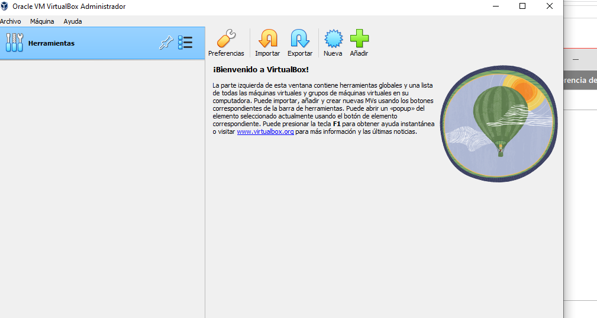
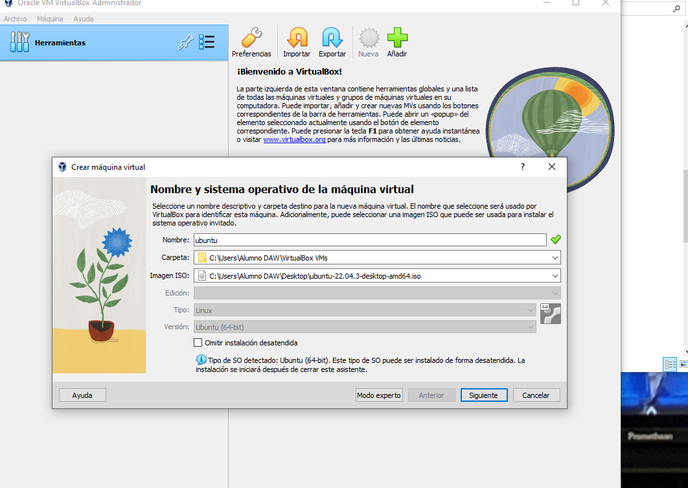
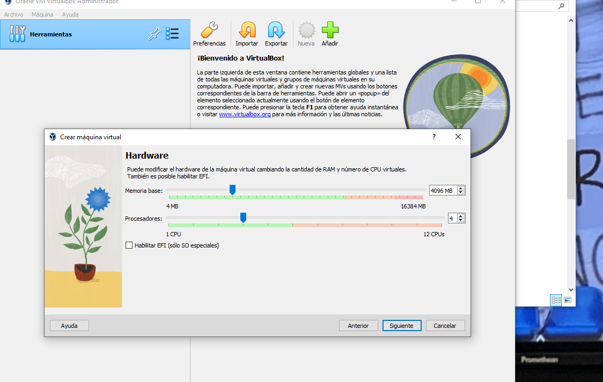
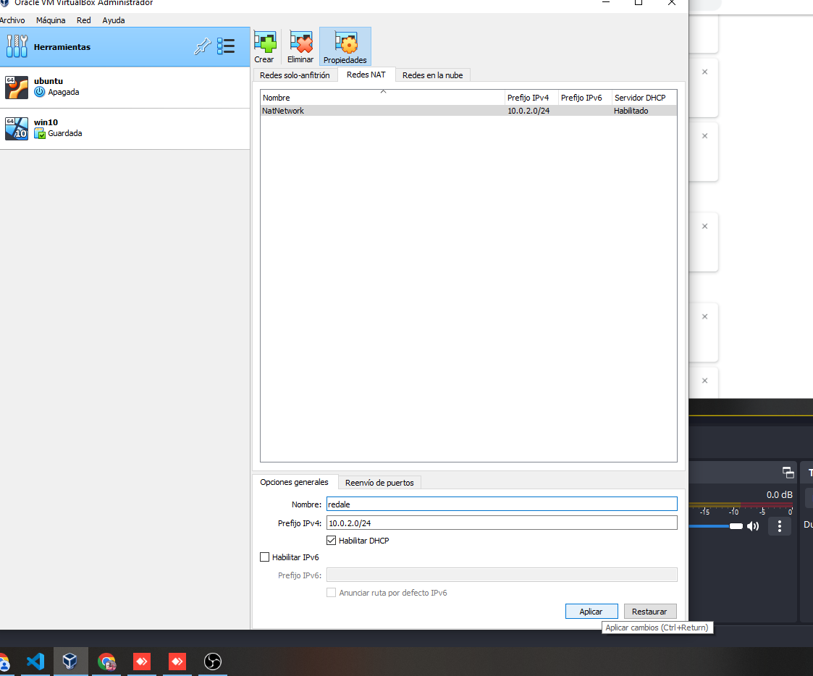
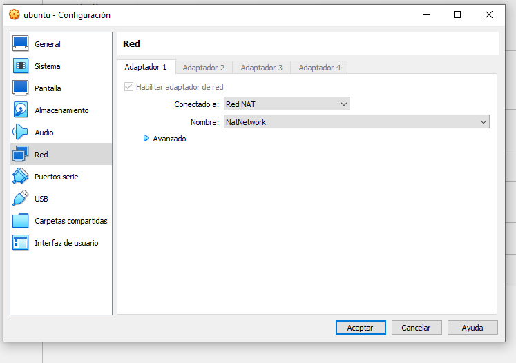

Tenemos que instalar el programa de Virtualbox y los sistemas operativos de Windows y Ubuntu.
Voy a la pagina oficial de estos programas y lo descargamos e instalamos
  Configuramos los parametros del programa e instalamos los sistemas en Virtualbox.
Ahora vamos a configurar la red NAT una vez tenemos instalado ambos sistemas operativos
Creamos una red nat y la configuramos en ambas maquinas virtuales así
Una vez realizado esto, ya se puede conectar entre sí
Ahora vamos a configurar eso en ubuntu y la explicacion esta en el siguiente video:
ponemos su y la contraseña
tras seguir los pasos,procedemos instalar samba desde ubuntu
Al seguir los pasos,le damos el boton insert,ponemos path,browseable,read only y valid users